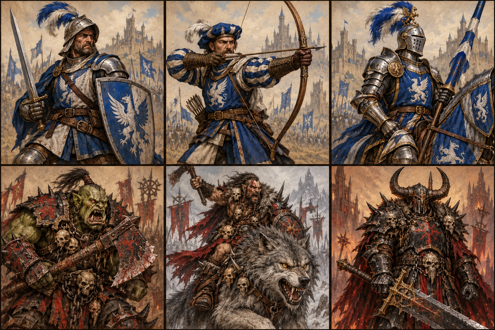
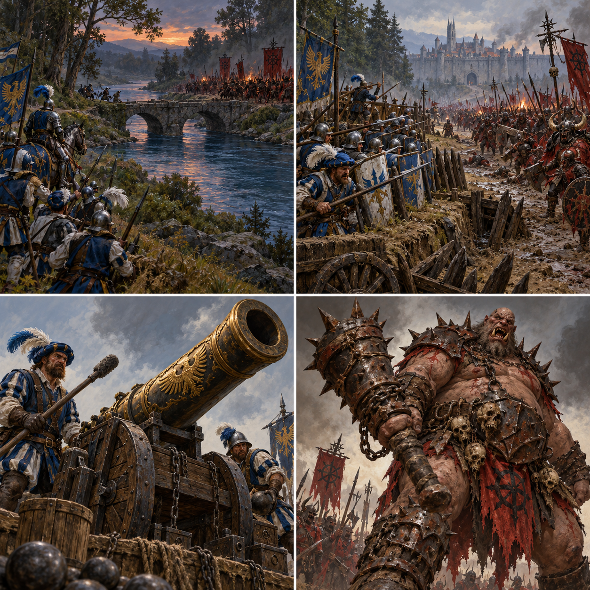
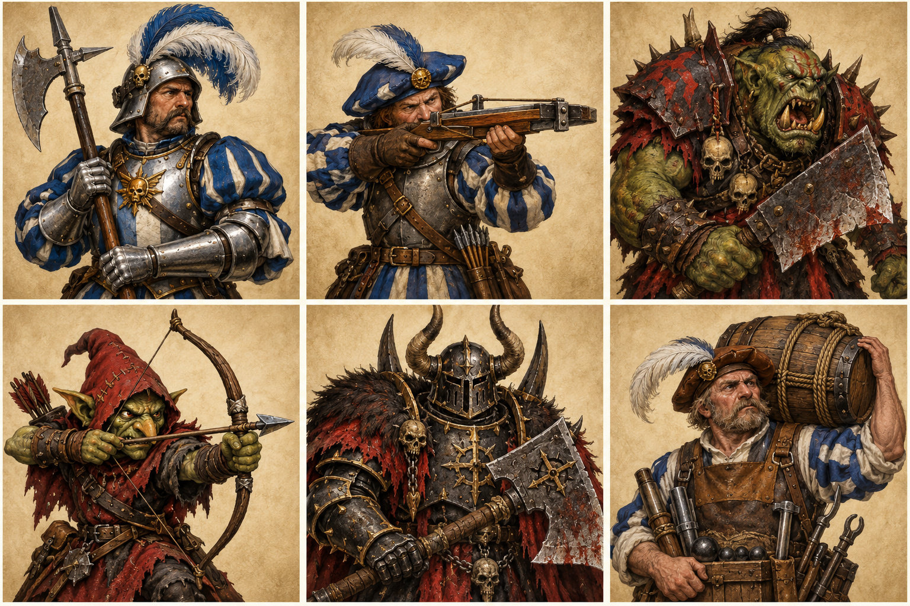

Swordsmen
2 unit(s)
Hit points: 4 figures per unit
2Attack dice
2Defence dice
2Move hexes
1Range
2Units
1Figure / hit
Melee unit; no special rule.
For three nights the river has run black beneath the pines. The Empire seized Bracken Ford to keep its supply road open; at dawn, Chaos horns answer from the eastern bank. The old bridge is the only safe crossing for horse and foot alike. Whoever holds it when the sun sinks will command the road into the heartland.

12 × 12 hex battlefield · North is at the top · Coordinates are column letter and row number
Click one of your units, then an empty highlighted hex to move or a glowing enemy hex to attack. Blue is Empire; red is Chaos. Each marker is one figure and one hit point.
Draw cards to begin turn 1.
Alternate card plays between the players.
Click a unit, then click an empty highlighted hex to move or an enemy to attack.

Hit points: 4 figures per unit
Melee unit; no special rule.

Hit points: 3 figures per unit
May shoot instead of moving
Hit points: 3 figures per unit
Cavalry; river crossing only at bridge
Hit points: 4 figures per unit
Melee unit; no special rule.
Hit points: 3 figures per unit
May shoot instead of moving
Hit points: 3 figures per unit
Melee unit; no special rule.